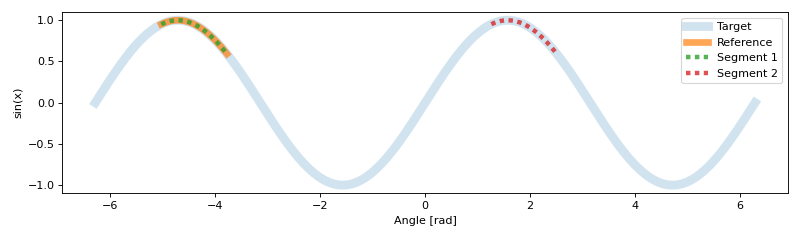

Basic Use¶
An example of instancing the Segmenter class to use the convenience methods on array data
>>> import seg1d
>>> import numpy as np
>>> import matplotlib.pylab as plt
Then we generate some data
>>> x = np.linspace(-np.pi*2, np.pi*2, 2000) #create an array of data
>>> targ = np.sin(x) # target data from a sin function
>>> t_s,t_e = 200,400 # define a sub-series
To assign the data to the Segmenter, first we create an instance of it and then
use the set_target() and add_reference() methods.
>>> s = seg1d.Segmenter() # instance of the segmenter
>>> s.minW, s.maxW, s.step = 98, 105, 1 # scaling parameters
>>> s.set_target(targ) # set target and reference data
>>> s.add_reference(targ[t_s:t_e])
>>> segments = s.segment() # run segmentation algorithm
>>> np.around(segments, decimals=7)
array([[2.000000e+02, 4.000000e+02, 1.000000e+00],
[1.200000e+03, 1.398000e+03, 9.999999e-01]])
Using matplotlib we can visualize the results
>>> plt.figure(figsize=(10,3))
>>> #plot the full sine wave
>>> plt.plot(x, targ,linewidth=8,alpha=0.2,label='Target')
>>> #plot the original reference segment
>>> plt.plot(x[t_s:t_e], targ[t_s:t_e],linewidth=6,alpha=0.7,label='Reference')
>>>
>>> #plot all segments found
>>> seg_num = 1
>>> for s,e,c in segments:
... plt.plot(x[s:e], targ[s:e],dashes=[1,1],linewidth=4,alpha=0.8,
... label='Segment {}'.format(seg_num))
... seg_num += 1
>>> plt.xlabel('Angle [rad]')
>>> plt.ylabel('sin(x)')
>>> plt.legend()
>>> plt.tight_layout()
>>> plt.show()
